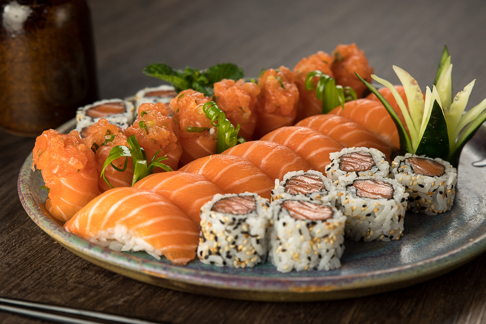

Bem-vindo ao restaurante japonês Sabor do Oriente, onde você pode desfrutar da autêntica culinária japonesa.
Sushi Variado
Sashimi
Temaki
Yakissoba
Missoshiro

Sushi é uma das iguarias mais conhecidas da culinária japonesa. Tradicionalmente feito com arroz temperado e combinado com peixe cru, frutos do mar e vegetais. Existem diversos tipos como nigiri, sashimi, maki e temaki, todos preparados com cuidado e estética refinada.
| Dia da semana | Horário |
|---|---|
| Segunda - Quinta | 18:00 - 22:00 |
| Sexta - Sábado | 18:00 - 23:00 |
| Domingo | Fechado |